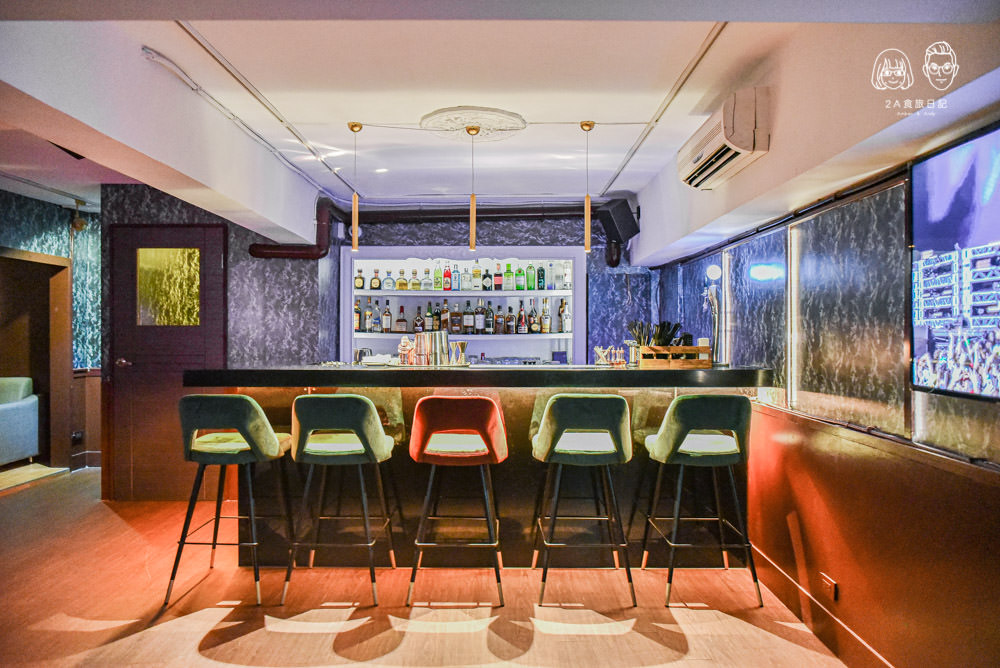
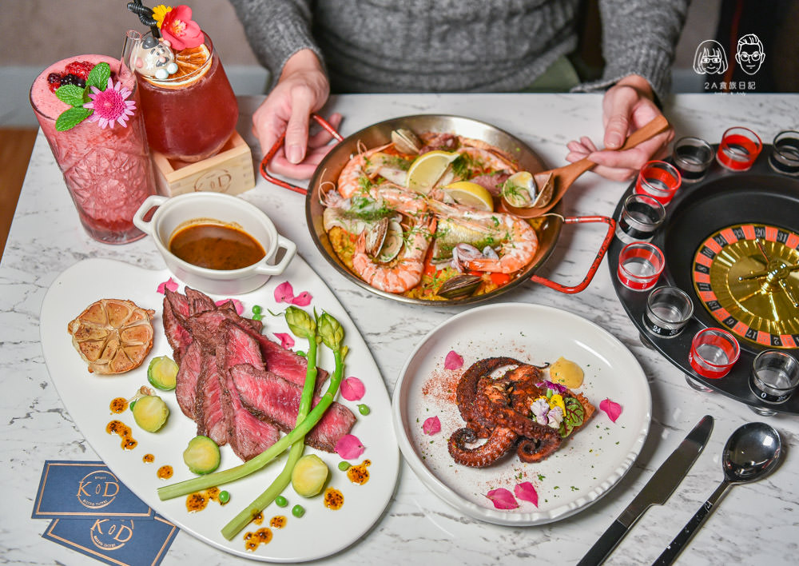

K.D. Bistro Taipei
古典浪漫風
「K.D. Bistro Taipei」距離捷運國父紀念館站2號出口4分鐘路程。 門口就使用花草佈置得美輪美奐，搭配網狀的吊椅宛如在花叢林裡享受下午茶的浪漫氛圍，往門口方向走就看到這面極為有個性的火焰翅膀， 店裡靠近門口的座位區則是打造為巴洛克式的宮廷華美風格，搭配仿舊的撲克牌裝飾更帶有文藝復興的戲劇式美感。

K.D Bistro Taipei以歐式古典風格的裝潢設計打造出一種不同於一般餐酒館的形式，多了一股神秘的氛圍，從外觀就相當引人注意。裝潢風格清新 又帶點浪漫的藍白色調裝潢天。除了一樓靠近電視牆有2~4人電音派對的電視牆空間的座位風格以及吧檯外，往樓梯下方走去還有二樓的用餐空間， 這裡有適合六個人用餐的高腳椅座位，旁邊一樣看得到電視螢幕牆，寬闊舒適的空間沒有過多的座位，另外不只一樓有調酒台，二樓也有設置一個。 K.D Bistro Taipei跟其他餐酒館比較不一樣的是，每個星期日的晚上11點都會請DJ到現場來炒熱氣氛，喜歡熱鬧或結交新朋友真的很適合這裡！

K.D Bistro Taipei的餐點有前菜、湯品、主餐、排餐、炸物和甜點，使用的食材一點也不馬乎，在擺盤及口味上吃得出下了不少功夫，主餐及排餐都是適合一個人吃的份量。 酒品則有香檳、紅酒、伏特加、琴酒、龍舌蘭、白蘭地、威士忌、經典調酒及特別調酒，不喝酒的朋友飲品有果昔、茶品、軟性飲料這三種可以選擇。